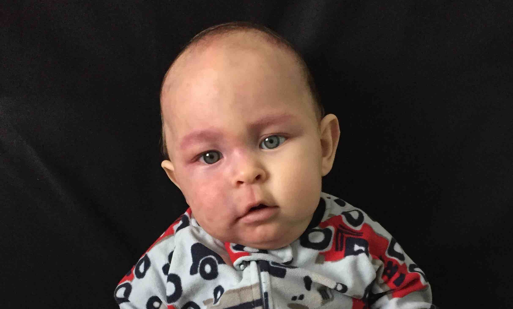

Andrea Rochira is a happily married IT specialist and the proud father of a Sturge-Weber baby boy. Following his son’s birth, he turned to the world wide web to cast more light on this rare syndrome. Soon he came to realize that Internet provided information often outdated, inconsistent, scattered, and unnecessarily heartbreaking. So, he decided to undertake this project and make available in one single website all the basic information that parents need to know when they hear about the Sturge-Weber syndrome for the first time.
The website is not intended to replace or take precedence over the medical advice offered by health care providers and specialized physicians. However, the contents reflect the earnest attempt to put together the best information on the matter, according to the author’s judgement and direct experience. The website contains a great deal of quotes from specialists in the field and references that the reader can consult to confirm the quality of the information collected.
It is the author’s most sincere hope that the reader will find guidance and comfort while visiting this website. He knows how overwhelming and agonizing can be to cope with something rare and unexpected affecting our little ones, the most cherished gifts of this earthly life. He would be pleased to receive any feedback on his work and super available to update any part of the published content if more reliable sources are provided. You can connect with him on Facebook or LinkedIn.
By the way, here is an amazing Facebook support group that made a great difference in the author's life, it's called Birthmark Treatment Support: Port Wine Stain - Pulsed Dye Laser - Vascular
Last, but not least, here’s the pic of the youngest and bravest warrior that Andrea ever met:
 Marco here, good luck to all my Sturge-Weber buddies!